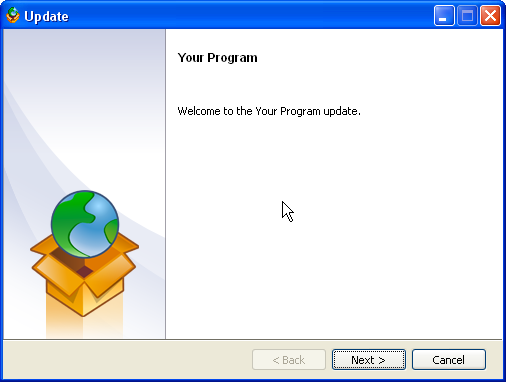
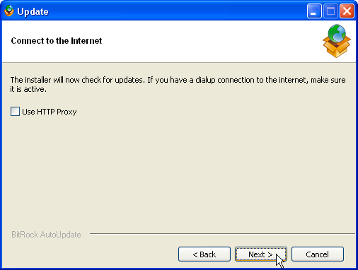
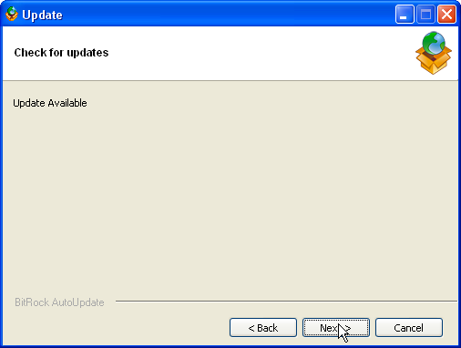
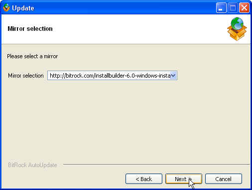

BitRock AutoUpdater allows you to add automatic update capabilities to your software. End users can launch an autoupdate wizard directly or you can invoke it from inside your application. The wizard will guide the end user through the steps of discovering, downloading and installing a new version of your software. The wizard can work in text, GUI and unattended modes.
The first version of BitRock AutoUpdater includes support for HTTP and FTP protocols. The update wizards run on Windows, Linux and OS X. Future versions will include support for additional protocols and platforms.
The BitRock Autoupdate system consists of two pieces: the autoupdate wizard, which runs on the client side, and a remotely hosted XML file that contains information about which updates are available and where to download them. The auto update wizard is a self-contained binary that you bundle with your application. When started, it guides the user through the process of finding available updates for your software, downloading and installing them. The information regarding which updates are available is stored in an XML file that the wizard accesses over the Internet.
As part of the update process, the wizard downloads an XML file from an HTTP URL specified in its configuration file (this is covered in a later section.) The XML file contains information about available updates for each supported platform. The following is an example of what an XML update file looks like:
<installerInformation>
<versionId>101</versionId>
<version>1.0.1</version>
<platformFileList>
<platformFile>
<filename>myprogram-1.0.1.exe</filename>
<platform>windows</platform>
</platformFile>
<platformFile>
<filename>myprogram-1.0.1.bin</filename>
<platform>linux</platform>
</platformFile>
<platformFile>
<filename>myprogram-1.0.1.tgz</filename>
<platform>osx</platform>
</platformFile>
</platformFileList>
<downloadLocationList>
<downloadLocation>
<url>http://example.com:8080/downloads/</url>
</downloadLocation>
</downloadLocationList>
</installerInformation>
installerInformation is the element that defines the file as a valid update file for BitRock AutoUpdater.
It contains the following tags
The version data present in the remote location must be compared with local version data to decide whether there is an update available or not. This local information is stored in a file named by default update.ini, which should be located in the same folder as the AutoUpdater binary.
The format of update.ini is very simple as well. It is shown in the following example:
[Update] url = http://example.com:8080/update.xml version_id = 100 update_download_location = /tmp check_for_updates = 1
This section provides a step-by-step guide on how to test the automatic update functionality. It assumes that you have created an update.xml file and have placed it on a web server. The server could be local or remote. You will need to replace example.com in the sample XML provided in an earlier section with the address or domain name of your server. If you are using a local server you can simply use 127.0.0.1 If you need to setup a web server, you can download WAMPStack or LAMPStack from the bitnami.org website. This section also assumes that an update.ini file has been placed in the same folder as the auto update binary.
To start the AutoUpdater in graphical mode, double click on the binary. You will then be presented with the following screen (please note that the screenshots have been taken on a Windows machine (Linux and OS X dialogs will be slightly different because they are customized to match the system theme):
After the welcome page, the AutoUpdater tells the user that it will connect to the Internet to look for updates. If a proxy needs to be configured to have access to the outside, it is possible to check the use HTTP proxy option to configure it.
The following screen shows whether or not an update is available. In the background, AutoUpdater has connected to the remote server and obtained the data from the remote XML file to determine whether or not an update is indeed available.
If no update is available or the server cannot be contacted, the next screen simply informs the user that is the case and the wizard exits with an error code.
If an update is available, pressing Next will display a list of mirrors (generated using the remote update data file). Selecting a mirror and pressing Next will start the download. Once it completes, the recently downloaded installer will be launched to start the application update process.
The flow the autoupdate wizard text mode follows is exactly the same as the graphical one. You can start the wizard in text mode using the --mode text switch
If you invoke the autoupdate wizard from your application, you may want to override the values from the configuration file. You can overwrite the contents of the update.ini file (or even select a different file) from the command line by providing extra parameters to the program invocation. A complete list of supported parameters is included below.
BitRock AutoUpdater 1.0.0
Usage:
--help Display the list of valid options
--settings_file <settings_file> Path to the local settings file, containing the HTTP URL to update
and the current version ID.
Default: update.ini
--url <url> HTTP URL that points to the xml file containing the update data.
Default:
--version_id <version_id> Version ID of the local installation.
Default:
--update_download_location <update_download_location> Path where the downloaded files will
be stored.
Default: ~/.bitrock/updates
--check_for_updates <check_for_updates> Boolean value to specify whether to check for
updates or not.
Default: 1
It is possible to use the AutoUpdater as a notifier. For example, you can invoke the AutoUpdater from your application to show whether or not a new update is available in your user interface. To do so, you need to start the AutoUpdater in an unattended mode, by appending --mode unattended to the command line arguments.
The exit code of the AutoUpdater will be 0 if an update is available and 1 if not. Depending on the result you can display the appropriate message to the end user.
It is possible to change the images, program name displayed, etc. in your autoupdate tool. To do so, use the bundled 'customize' configuration tool. The syntax is as follows:
customize build /path/to/project.xml
Where project is an XML file that contains the autoupdate customization information. The command will customize the default autoupdate runtime for the current platform and place it in the output folder. Optionally, you can pass a platform argument and it will be built for that platform:
customize build /path/to/project.xml linux
The format of the file for autoupdate project configuration is based on XML. It has a base <autoUpdateProject> tag and it admits a number of different tags: